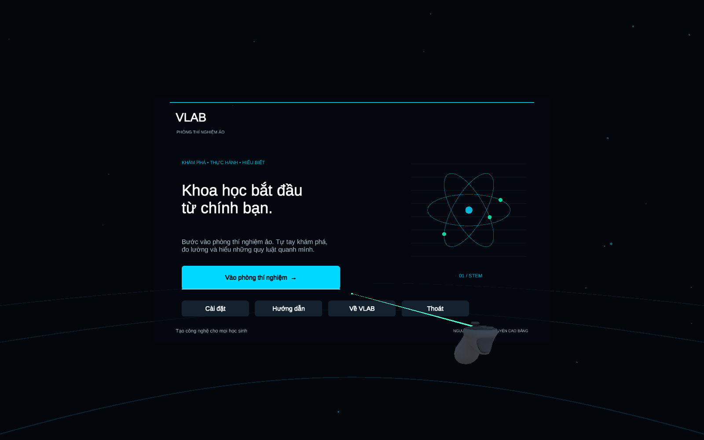

EDIT TESTS108 / 1080 failed · 0 skipped/inconclusivePLAY TESTS88 / 880 failed · 0 skipped/inconclusivePRODUCTION TESTS46 / 460 failed · 0 skipped/inconclusiveANDROID BUILDSucceededARM64 · IL2CPP · Cardboard 1.35.0
Physical Android optics, BLE transport, controller latency and sustained performance remain unverified. This page reviews the Unity project; it is not a replacement laboratory interface.

Menu-controller
Capture resolution: 1600 × 1000. Camera renders were inspected for clipping, label contrast and visible controller feedback. Native Unity UI was also inspected during the run.